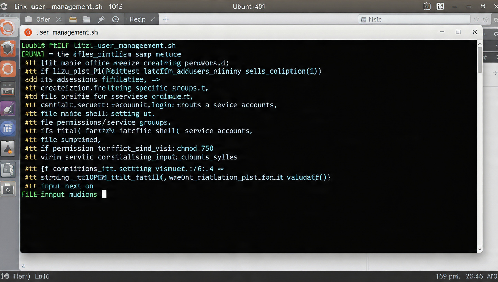
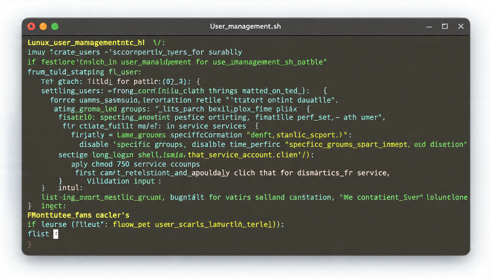

My Projects

Personal Portfolio Website
Responsive multi-page portfolio with academic planner and contact form. Built with semantic HTML, custom CSS, and vanilla JS.
Tech: HTML, CSS, JavaScript
View Project
Linux User Management Script
Bash script assignment to automate creating users and setting permissions on Ubuntu. Focused on security best practices.
Tech: Bash, Linux, CLI
View Project
Network Packet Analysis Lab
Captured and analyzed network traffic using Wireshark to identify normal vs suspicious activity for cybersecurity class.
Tech: Wireshark, TCP/IP
View Project